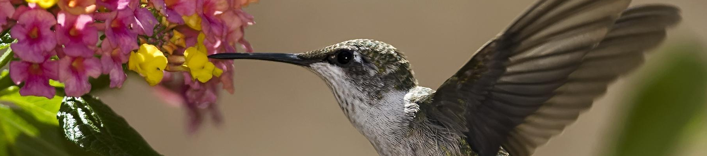
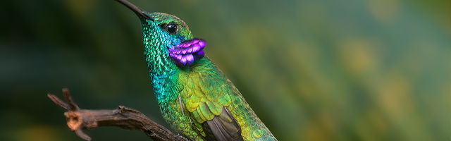
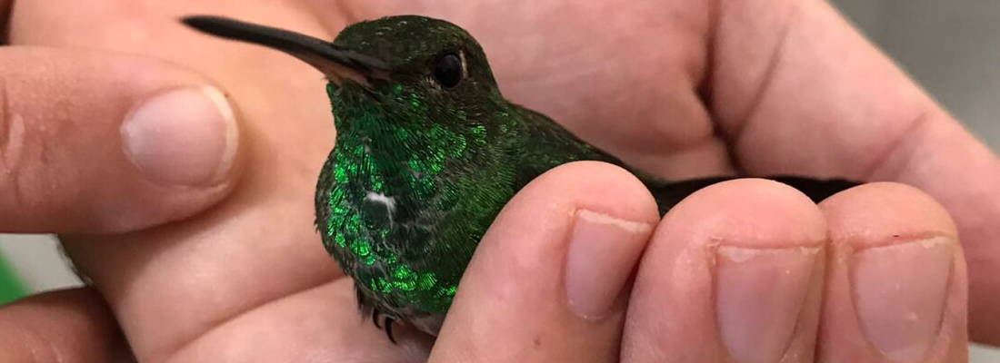
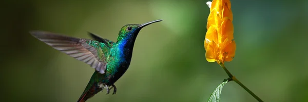

Tudo sobre a Fauna do Brasil!
Aqui você encontrará tudo sobre os principais pássaros da fauna brasileira
Beija Flor
10 Curiosidades
Uma das espécies de pássaros mais famosas no Brasil, o beija-flor chama a atenção por seu corpo delicado, bico alongado e jeito de voar. Mas o quanto você realmente sabe sobre esse pássaro de muitos encantos? É hora de testar seus conhecimentos sobre ele com esta lista de curiosidades sobre o beija-flor!
1. O beija-flor é uma ave das Américas
Da família dos troquilídeos, o beija-flor é originário das Américas. No nosso continente, o habitat do beija-flor pode ser o Alasca, nos Estados Unidos, até a Terra do Fogo, na nossa vizinha Argentina.
Ao todo, são mais de 320 espécies, sendo que a maior parte delas vive em climas tropicais e subtropicais, em especial no Brasil e no Equador.
2. Ele tem diversos nomes curiosos de acordo com a espécie
Você já ouviu falar em “colibri”? E em “guainumbi”? Apesar de pouco usados pela maioria das pessoas no dia a dia, esses termos indígenas relativamente familiares também servem para designar algumas espécies de beija-flor.
Outros nomes comuns para falar do beija-flor são “cuitelo” (Mato Grosso do Sul e Mato Grosso), “pica-flor”, “chupa-flor” e “ariramba”.
3. O brilho das penas do beija-flor não vem da pigmentação
Um dos elementos de maior beleza no beija-flor são suas cores cintilantes. Ao contrário do que muitos imaginam, essas cores não vêm da pigmentação das penas. Na verdade, elas são resultado de um fenômeno conhecido como iridescência.
Tal fenômeno acontece quando as cores do arco-íris são refletidas em uma superfície. Não à toa, fatores como nível de iluminação, umidade, ângulo de visão e desgastes podem alterar as cores de um beija-flor.
4. Eles têm um coração enorme (e não estamos falando no sentido figurado)
Outra das curiosidades sobre beija-flor é que o peso do coração dele equivale a 5% do peso total de seu corpo. Pode parecer pouca coisa, mas, para se ter uma ideia, o peso do nosso coração não ultrapassa a marca de 0,5% do nosso peso.
O fator faz com que o beija-flor tenha uma circulação sanguínea mais eficiente e, portanto, melhor irrigação dos músculos, o que é importante para seu voo.
5. Eles estão entre as poucas espécies de aves que conseguem ficar suspensas no ar
Ser capaz de ficar suspenso no ar é está entre as curiosidades do beija-flor, mas pouca gente sabe o quanto ela é realmente fascinante.
A aptidão só é possível graças a um conjunto de particularidades orgânicas que inclui: batimentos cardíacos e metabolismo acelerados, alimentação especial, ossos fundidos e alongados nas asas, “ombro” com rotação de cerca de 180° e bater de asas rápido e em formato de oito.
Uma das curiosidades sobre o beija-flor mais interessante também é que se trata da única espécie de ave que consegue voar para trás.
6. O menor pássaro do mundo é um beija-flor
Com aproximadamente 6 cm de comprimento e peso inferior a 2 gramas, a colibri-abelha-cubano é considerada a menor espécie de pássaro existente. Originária de Cuba, a espécie — Mellisuga helenae — só pode ser encontrada no país, onde também é conhecida como beija-flor helena ou zunzuncito.
7. O beija-flor é um verdadeiro comilão
Por causa de seu metabolismo acelerado, um dos hábitos do beija-flor é comer de 5 a 8 vezes por hora, alimentando-se de uma quantidade de comida que pode representar de 8 a 10 vezes o peso de seu corpo.
Essa alimentação, no entanto, é bem diferenciada: 90% dessa comida para beija-flor é baseada em néctar, o que garante a rápida liberação de energia para o organismo. O restante vem de pólen e pequenos invertebrados.
8. Mesmo em câmera lenta, é difícil perceber o bater de asas de um beija-flor
Isso acontece porque algumas espécies de beija-flor chegam a bater as asas até 80 vezes por segundo. Contudo, as câmeras tradicionais captam somente cerca de 30 quadros por segundo, quantidade mais confortável para os nossos olhos.
É por essa razão que mesmo a câmera lenta tradicional não consegue mostrar todos os movimentos de asa de um beija-flor. Para tanto, é necessário o uso de câmeras especiais, com captação mil quadros por segundo.
9. Ele é importante para a polinização de certas plantas
Dentre as curiosidades sobre beija-flor está sua alimentação. Ele se alimenta do néctar das plantas, e é daí que vem o nome popular dos troquilídeos. Mas engana-se quem pensa se tratar de uma relação unilateral.
Mais uma das curiosidades sobre o beija-flor é que ele, ao encostar a cabeça nas flores para sugar o néctar, absorve pólen em seu bico. Dessa forma, quando vai se alimentar de outra planta, ele espalha a substância, contribuindo para a reprodução das plantas. Ou seja, o néctar para beija-flor acaba sendo também uma espécie de néctar para as plantas.
10. O beija-flor percorre milhares de quilômetros em suas migrações
Diversas espécies de beija-flor não permanecem a vida toda na mesma região. Por causa da escassez de alimentos típica de determinadas épocas do ano, muitas delas migram para outros locais uma vez por ano.
O beija-flor-rufous no inverno, por exemplo, voa por mais de 3 mil quilômetros, indo do Alaska até o México em busca de alimento.
